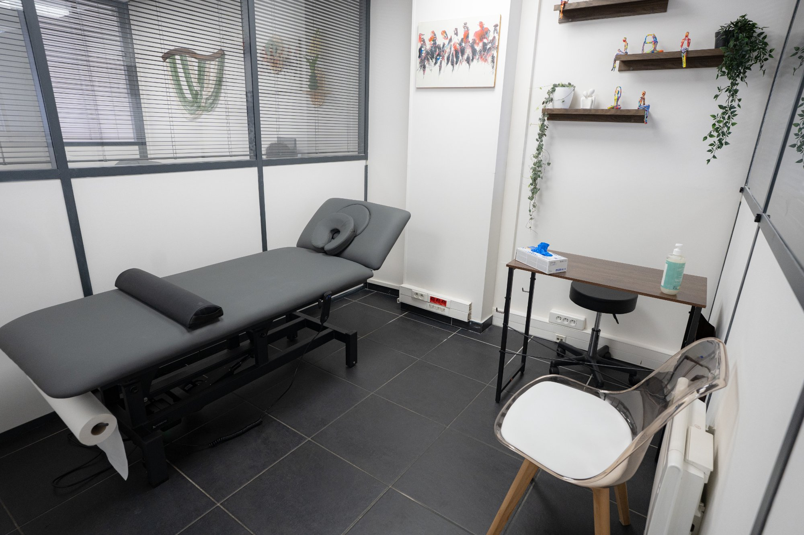

Kinésithérapie du dosLombaires & Cervicales
Mal de dos, hernie discale, sciatique, torticolis, cervicalgies… Le cabinet Viluma à Boulogne-Billancourt prend en charge toutes les pathologies du rachis avec une approche active et durable.
Prendre rendez-vousRachis & douleurs dorsales
Le mal de dos, on en fait notre affaire
Le mal de dos est la première cause d'arrêt de travail en France. Qu'il soit aigu (lumbago, torticolis) ou chronique (hernie discale, sciatique, cervicalgies), il existe des solutions efficaces sans médicaments ni chirurgie dans la grande majorité des cas.
- Lumbago, lombalgie aiguë ou chronique
- Hernie discale et sciatique
- Cervicalgies, torticolis, névralgie cervico-brachiale
- Dorsalgies et douleurs entre les omoplates
- Scoliose et troubles de la posture

Notre approche
Au-delà du massage : rééduquer pour ne plus rechuter
Le soulagement rapide de la douleur c'est important — mais ce n'est pas suffisant. Notre objectif est de comprendre pourquoi vous avez mal et de corriger les causes en profondeur pour éviter les récidives.
Bilan postural complet
Analyse de votre posture, de votre mobilité et des déséquilibres musculaires à l'origine de votre douleur.
Renforcement du gainage
Travail des muscles profonds du dos sur notre plateau technique pour stabiliser durablement votre colonne.
Mobilisation & étirements
Techniques manuelles et exercices pour restaurer la mobilité vertébrale et soulager la compression nerveuse.
Rééducation active
Progressivement, on vous remet en mouvement sur notre plateau technique : vélo, tapis, renforcement ciblé.
Éducation thérapeutique
On vous apprend les bons gestes au quotidien pour que votre dos reste protégé au travail, chez vous, au sport.
Coordination kiné + ostéo
Si besoin, Sarah et Maroua travaillent en coordination pour une prise en charge globale du rachis.